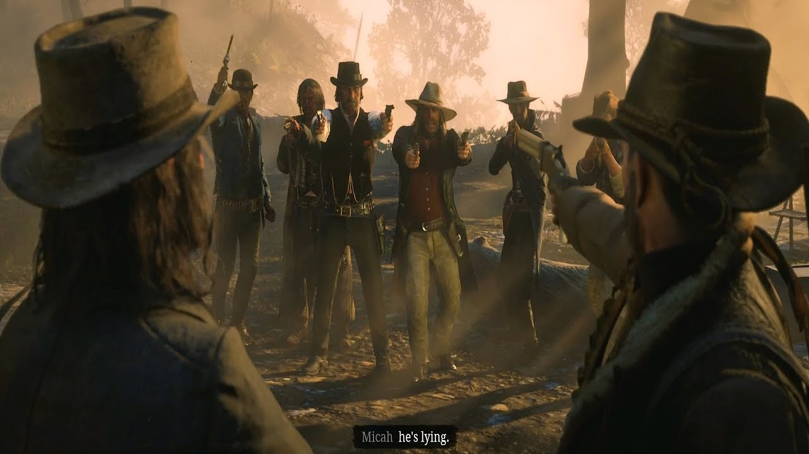
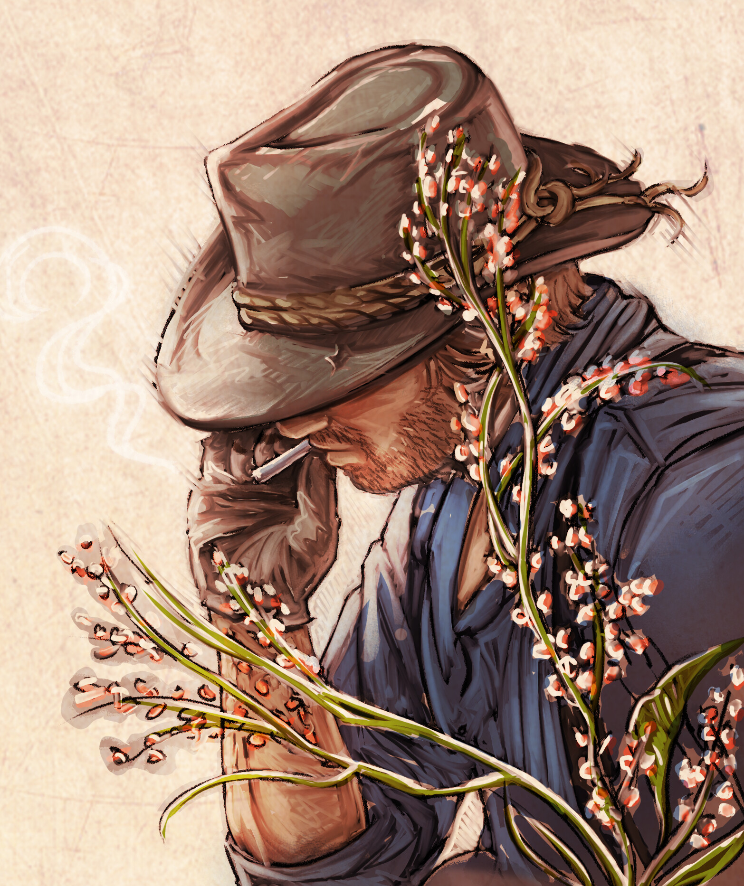

RDR2 influenciou o design de jogos em todo o mundo, estabelecendo um novo padrão de qualidade para jogos de mundo aberto. Sua representação detalhada do Velho Oeste, somada à carga emocional da narrativa, inspirou fãs a criarem mods, fan arts, vídeos, teorias e até dissertações acadêmicas. A história de Arthur Morgan e da gangue Van der Linde é hoje considerada uma das mais impactantes já contadas em videogames. O jogo também reacendeu o interesse por temas do western, gerando debates sobre moralidade, violência, e o fim de uma era.

